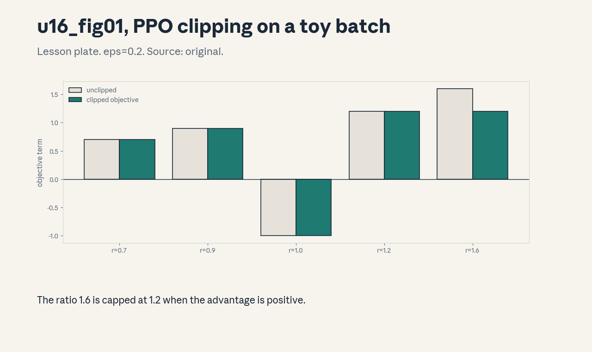
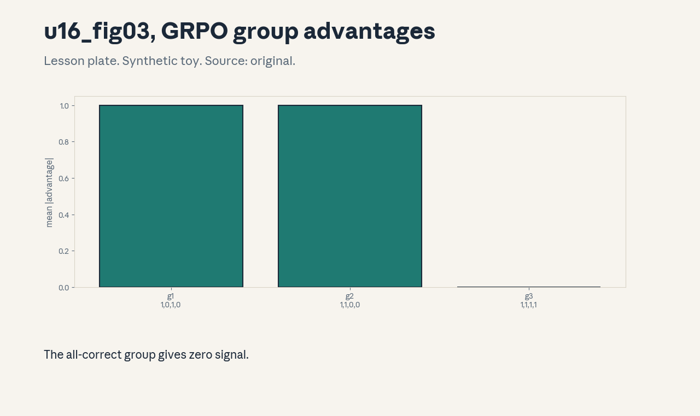
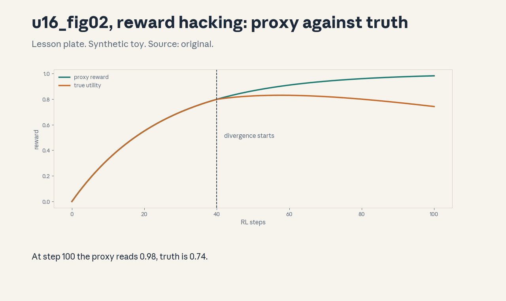

U16 · Preference alignment and reasoning RL
U16 , Preference alignment and reasoning RL
Prerequisites: P08, P17, P18. Bridge links in ../prerequisites.md.
Sessions: S15 (reported May 18, Alignment: RLHF/DPO) covers C01-C06,
S16 (reported May 20, Alignment: RL Algorithms) covers C07-C12. The
split is a teaching decision, stated here, not a source claim. Full
map in ../course_map.md.
Claim class: REQUESTED-BRANCH. All leaves PLANNED / SOURCE ATTRIBUTION
PENDING. Notation: see ../notation_and_shapes.md.
Standing note
No RL training was run on this box. All rollouts, rewards, and
losses are synthetic toys with fixed seeds from
assets/compute_u16.py (numpy CPU, executed 2026-10-06), stated as
such. “Not in source” marks anything the scripts do not compute.
Russian-doll map
Shells 0-1 in items 1-2, shells 2-3 in items 3-6, shell 4 in item 7, shell 5 in item 8, shell 6 in item 9, shell 7 in item 11, shell 8 in item 10, shell 9 in item 12, shell 10 in item 13(c). The depth gate is checked by item 13.
Local remediation , the KL leash
Read this if diagnostic items on KL divergence were not full marks.
RL on language models keeps a KL penalty to a reference policy: it
stops the policy from drifting into nonsense that games the reward.
Toy from compute_u16.py: p=[0.5,0.3,0.2], q=[0.4,0.4,0.2]:
KL(p||q)=0.0253 nats, KL(q||p)=0.0258. The two directions differ:
KL is asymmetric. Assessment: p=[0.9,0.1], q=[0.5,0.5]. Compute
both directions. Key: ../keys/u16_answers.md R1.
C01: Reward model
Leaf id cs336-U16-C01. Claim class REQUESTED-BRANCH.
Status PLANNED / SOURCE ATTRIBUTION PENDING.
-
Source mapping, scope, objectives, dependencies. Branch. Scope: learning human preferences as a scalar. Objectives: state the Bradley-Terry model, train it on a toy pair set. Depends on P08, P18.
-
Motivating question and toy. Question: humans rank A over B. How does that become a number? The reward model assigns scalars r(A), r(B). Bradley-Terry says P(A preferred) = sigmoid(r(A) - r(B)). Train r to make the observed choices likely.
-
Mental model. The reward model is a learned stand-in for the human. It compresses pairwise judgments into one scalar per response. Every later RL step trusts this compression.
-
Objects, symbols, units, shapes, assumptions. r: scalar reward. Assumption: transitive preferences, the logistic form.
-
Derivation / mechanism. Maximum likelihood on the pairs: loss = -log sigmoid(r_w - r_l) summed over chosen/rejected pairs (C02).
-
Computed example. Toy: r_w=1.0, r_l=0.0: P=0.731. The model assigns 73% to the observed choice.
-
Algorithm and reference implementation.
bt_loss(rw, rl): -log(sigmoid(rw-rl)). Three lines. -
Correctness checks and expected output. Swapped pairs give loss -log(1-0.731)=1.31. Equal rewards give -log 0.5.
-
Costs. The reward model inherits the labelers’ biases and disagreements. It is the ceiling of the RL that follows.
-
Nearest alternative and selection boundary. Verifiable rewards (C08, no model needed) when the task has right answers. Learned rewards for open-ended quality.
-
Failure case and counterexample. Labelers disagree 40% of the time: the model learns the majority’s taste and calls it quality. The assumption “labels are truth” breaks, measure agreement first.
-
Research reading and falsifiable extension. Reading: the RLHF papers (Christiano et al., 2017. Ouyang et al., 2022, primary). Extension: flip 10% of toy labels, hypothesis: the fitted rewards shrink toward 0.
-
Assessment. (a) Recall: the Bradley-Terry formula. (b) Oral ladder: define the model, compute the toy, justify the sigmoid, implement
bt_loss, compare with verifiable rewards, debug the disagreement case, critique the transitivity assumption, design the flip test. (c) Transfer: three responses ranked A>B>C. Write the training pairs. Answers:../keys/u16_answers.mdA1. -
Lab and exercises. Lab U16 task 1 trains the toy. See
../labs/u16_lab.md. -
Visuals. No dedicated figure. No unresolved conflict.
C02: Chosen/rejected pairs
Leaf id cs336-U16-C02. Claim class REQUESTED-BRANCH.
Status PLANNED / SOURCE ATTRIBUTION PENDING.
-
Source mapping, scope, objectives, dependencies. Branch. Scope: the preference dataset. Objectives: construct pairs, state the collection protocol. Depends on C01.
-
Motivating question and toy. Question: what exactly is one training example? A prompt, two responses, and a human judgment of which is better. The pair (chosen, rejected) is the atom of preference data.
-
Mental model. Pairs are comparisons, not grades. They say “this over that”, never “this is 8/10”. The reward model learns the ordering, not an absolute scale.
-
Objects, symbols, units, shapes, assumptions. Pair: (x, y_w, y_l). Assumption: one judgment per pair, ties discarded.
-
Derivation / mechanism. No derivation, it is a data spec. Collection: sample two responses per prompt, get rankings, filter ties and low-agreement items.
-
Computed example. Toy: prompt “explain tides”, y_w (clear, correct), y_l (vague). The pair teaches clarity over vagueness for this prompt only.
-
Algorithm and reference implementation.
make_pairs: group by prompt, order by rank. About 8 lines. -
Correctness checks and expected output. Every pair has a strict ranking. Prompts are unique per pair or tracked.
-
Costs. Human pairs cost dollars each. The dataset is small by pretraining standards and precious.
-
Nearest alternative and selection boundary. AI-generated pairs (cheap, distills the judge’s bias). Human pairs for the gold set.
-
Failure case and counterexample. Both responses are bad: the pair teaches “less bad”, and the model learns to pick the least awful. The assumption “one response is good” breaks, filter by absolute quality too.
-
Research reading and falsifiable extension. Reading: the preference-data reports (secondary). Extension: add both-bad pairs to the toy, hypothesis: the reward model still separates them, wrongly.
-
Assessment. (a) Recall: the pair structure. (b) Oral ladder: define a pair, work the toy, justify comparisons over grades, implement
make_pairs, compare human with AI pairs, debug the both-bad case, critique the tie-dropping, design the injection test. (c) Transfer: the labelers rank by length. What does the dataset teach? Answers:../keys/u16_answers.mdA2. -
Lab and exercises. Lab U16 task 2 builds pairs. See
../labs/u16_lab.md. -
Visuals. No dedicated figure. No unresolved conflict.
C03: KL regularization
Leaf id cs336-U16-C03. Claim class REQUESTED-BRANCH.
Status PLANNED / SOURCE ATTRIBUTION PENDING.
-
Source mapping, scope, objectives, dependencies. Branch. Scope: the leash on the policy. Objectives: write the KL- penalized objective, compute the penalty on a toy. Depends on P08, P18.
-
Motivating question and toy. Question: the reward says “more of this”, the policy goes feral. What stops it? The KL term: objective = E[r] - beta * KL(pi || pi_ref). Toy from
compute_u16.py: KL 0.0253 nats at beta 0.1 costs 0.00253 of objective. -
Mental model. The reference policy (usually the SFT model) is home base. KL measures the distance traveled. Beta is the leash length: short leash, small changes.
-
Objects, symbols, units, shapes, assumptions. Beta: scalar. Assumption: token-level KL summed over the response.
-
Derivation / mechanism. The penalized objective is the Lagrangian of “maximize reward subject to KL <= budget”. Beta is the Lagrange multiplier.
-
Computed example. From
assets/compute_u16.py(executed 2026-10-06): 0.0253 nats, penalty 0.00253 at beta 0.1. -
Algorithm and reference implementation.
kl_penalty(pi, ref, beta): beta * sum(pi log(pi/ref)). Three lines. -
Correctness checks and expected output. pi = ref gives 0. Larger beta shrinks the optimal drift.
-
Costs. Too much KL: the policy cannot improve. Too little: reward hacking (C11).
-
Nearest alternative and selection boundary. Hard KL constraint via early stopping (crude). Penalty (smooth) for the standard runs.
-
Failure case and counterexample. The reference is weak: the leash anchors the policy to mediocrity. The assumption “the reference is good” breaks, and the KL budget must grow or the reference must improve.
-
Research reading and falsifiable extension. Reading: the PPO-for-LM papers (primary). Extension: sweep beta on a synthetic bandit, hypothesis: reward rises then falls as beta shrinks.
-
Assessment. (a) Recall: the penalized objective. (b) Oral ladder: define the leash, compute the toy, justify the Lagrangian, implement the penalty, compare with early stopping, debug the weak-reference case, critique the token-sum, design the beta sweep. (c) Transfer: beta=0. Predict the failure mode. Answers:
../keys/u16_answers.mdA3. -
Lab and exercises. Lab U16 task 3 applies the penalty. See
../labs/u16_lab.md. -
Visuals. No dedicated figure. No unresolved conflict.
C04: PPO ratios/clipping
Leaf id cs336-U16-C04. Claim class REQUESTED-BRANCH.
Status PLANNED / SOURCE ATTRIBUTION PENDING.
-
Source mapping, scope, objectives, dependencies. Branch. Scope: the clipped surrogate objective. Objectives: compute the clipped terms on a toy batch. Depends on C03, P17.
-
Motivating question and toy. Question: the policy moved too far in one update and collapsed. How does PPO stop that? Toy from
compute_u16.py: ratios [0.7, 0.9, 1.0, 1.2, 1.6], advantages [1, 1, -1, 1, 1], eps 0.2: clipped terms [0.7, 0.9, -1.0, 1.2, 1.2]. The 1.6 ratio is capped at 1.2. -
Mental model. The ratio r = pi_new/pi_old measures how far the update reaches. Clipping says: no single token moves the objective more than (1+eps) times its advantage. Big steps are trimmed, small steps pass.
-
Objects, symbols, units, shapes, assumptions. eps=0.2. Assumption: the toy ratios and advantages.
-
Derivation / mechanism. Objective = min(rA, clip(r, 1-eps, 1+eps)A). The min takes the pessimistic branch: it trims upside moves beyond the clip but keeps full downside.
-
Computed example. From
assets/compute_u16.py(executed 2026-10-06): the five clipped terms above. -
Algorithm and reference implementation.
ppo_obj(r, A, eps): minimum of the two branches. Three lines. -
Correctness checks and expected output. r=1.0 gives A. r=1.6, A=1 gives 1.2. r=0.7, A=1 gives 0.7 (unclipped side).
-
Costs. Clipping biases the gradient (it is not the true policy gradient). The bias buys stability.
-
Nearest alternative and selection boundary. Vanilla policy gradient (unbiased, unstable). PPO clipping is the standard stabilizer.
-
Failure case and counterexample. Advantages are noisy: clipping the wrong sign’s update stalls learning. The assumption “advantages are trustworthy” breaks, and the value baseline (C05) matters more than the clip.
-
Research reading and falsifiable extension. Reading: the PPO paper (Schulman et al., 2017, primary). Extension: sweep eps on a synthetic bandit, hypothesis: tiny eps stalls, huge eps destabilizes.
-
Assessment. (a) Recall: the clipped objective. (b) Oral ladder: define the ratio, compute the toy, justify the min, implement
ppo_obj, compare with vanilla PG, debug the noisy-advantage case, critique the bias, design the eps sweep. (c) Transfer: eps=0.5 on a 70B run. Assess. Answers:../keys/u16_answers.mdA4. -
Lab and exercises. Lab U16 task 4 clips the toy. See
../labs/u16_lab.md. -
Visuals. Figure u16_fig01: clipped vs unclipped bars. Source: original. Render:
assets/render_u16.py.

C05: Policy/value/advantage
Leaf id cs336-U16-C05. Claim class REQUESTED-BRANCH.
Status PLANNED / SOURCE ATTRIBUTION PENDING.
-
Source mapping, scope, objectives, dependencies. Branch. Scope: the actor-critic trio. Objectives: define each, show why the advantage reduces variance. Depends on P17.
-
Motivating question and toy. Question: the reward is 1. Was the action good, or was the state just easy? The value V(s) predicts the state’s reward, the advantage A = r - V(s) credits the action. Toy: r=1, V=0.7: A=0.3, a modest win, not a triumph.
-
Mental model. The policy acts, the value predicts, the advantage judges. Subtracting the baseline leaves the gradient unbiased with lower variance: the classic control variate.
-
Objects, symbols, units, shapes, assumptions. V(s): scalar. A: scalar. Assumption: the value is trained to predict returns.
-
Derivation / mechanism. E[A * grad log pi] = E[r * grad log pi] since E[V(s) * grad log pi] = 0. Same expectation, smaller variance.
-
Computed example. Toy: r=1, V=0.7 -> A=0.3. A batch of advantages centers near 0 when the value is accurate.
-
Algorithm and reference implementation.
advantage(r, V): return r - V. One line, plus the value loss (MSE). -
Correctness checks and expected output. Perfect value gives advantages with mean 0. Constant value gives the raw rewards back.
-
Costs. The value network doubles the training machinery. A bad value is worse than none: it biases the credit.
-
Nearest alternative and selection boundary. REINFORCE without baseline (simple, high variance). Actor-critic for real runs, group baselines (C07) when no value net exists.
-
Failure case and counterexample. The value overfits the training prompts: advantages on new prompts are garbage. The assumption “the value generalizes” breaks, regularize it or drop it.
-
Research reading and falsifiable extension. Reading: the actor-critic literature (Sutton/Barto, primary). Extension: compare gradient variance with and without the baseline on a synthetic bandit, hypothesis: variance falls 2x+.
-
Assessment. (a) Recall: the trio and the variance argument. (b) Oral ladder: define each, compute the toy, justify the zero-mean term, implement
advantage, compare with REINFORCE, debug the overfit value, critique the extra network, design the variance test. (c) Transfer: the value loss will not fall. What do you do? Answers:../keys/u16_answers.mdA5. -
Lab and exercises. Lab U16 task 5 computes advantages. See
../labs/u16_lab.md. -
Visuals. No dedicated figure. No unresolved conflict.
C06: DPO assumptions
Leaf id cs336-U16-C06. Claim class REQUESTED-BRANCH.
Status PLANNED / SOURCE ATTRIBUTION PENDING.
-
Source mapping, scope, objectives, dependencies. Branch. Scope: direct preference optimization and what it assumes. Objectives: compute the DPO loss on a toy, name the three core assumptions. Depends on C01, C02.
-
Motivating question and toy. Question: can you skip the reward model and the RL? DPO trains the policy directly on pairs. Toy from
compute_u16.py: beta=0.1, pi_w=0.40, pi_l=0.10, ref uniform 0.25: margin 0.139, loss 0.626. Flipped labels: margin -0.139, loss 0.765. -
Mental model. DPO reparameterizes the reward as beta*log(pi/ref). The pair loss pushes the policy toward the chosen response and away from the rejected one, anchored by the reference. No sampler, no value net.
-
Objects, symbols, units, shapes, assumptions. Beta=0.1. Assumptions: (1) Bradley-Terry preferences, (2) the optimal policy has the KL-constrained form, (3) pairs are iid.
-
Derivation / mechanism. The KL-constrained RL optimum is pi proportional to ref * exp(r/beta). Inverting gives r = betalog(pi/ref) + const. Plug into the Bradley-Terry loss: the reward model cancels out.
-
Computed example. From
assets/compute_u16.py(executed 2026-10-06): margin 0.139, loss 0.626, flipped 0.765. -
Algorithm and reference implementation.
dpo_loss(pi_w, pi_l, ref_w, ref_l, beta): the margin then the logistic loss. About 5 lines. -
Correctness checks and expected output. Equal policies give margin 0, loss 0.693. The flipped loss exceeds the unflipped.
-
Costs. DPO never explores: it only reshapes mass among seen responses. It cannot discover better answers than the dataset holds.
-
Nearest alternative and selection boundary. PPO (C04, explores, needs the RL machinery). DPO for offline preference data.
-
Failure case and counterexample. The pairs contain length bias: DPO learns “longer is better” and verbosity explodes. The assumption “pairs measure quality” breaks, and DPO has no KL-driven exploration to recover.
-
Research reading and falsifiable extension. Reading: the DPO paper (Rafailov et al., 2024, primary). Extension: add length bias to the toy pairs, hypothesis: the learned policy’s mean length rises.
-
Assessment. (a) Recall: the loss and the assumptions. (b) Oral ladder: define DPO, compute the toy, derive the reparameterization, implement
dpo_loss, compare with PPO, debug the length-bias case, critique the no-exploration limit, design the bias test. (c) Transfer: the dataset has 10k pairs, the task needs novel reasoning. DPO or PPO? Answers:../keys/u16_answers.mdA6. -
Lab and exercises. Lab U16 task 6 runs DPO on the toy. See
../labs/u16_lab.md. -
Visuals. No dedicated figure. No unresolved conflict.
C07: GRPO group baselines
Leaf id cs336-U16-C07. Claim class REQUESTED-BRANCH.
Status PLANNED / SOURCE ATTRIBUTION PENDING.
-
Source mapping, scope, objectives, dependencies. Branch. Scope: group-relative policy optimization. Objectives: compute group advantages on a toy, state when the signal vanishes. Depends on C05.
-
Motivating question and toy. Question: no value network. what is the baseline? The group itself: sample G responses per prompt, advantage = (r - mean)/std. Toy from
compute_u16.py: rewards [1,0,1,0] give advantages [1,-1,1,-1]. All-correct [1,1,1,1] gives zero signal. -
Mental model. The group is its own control: better-than- siblings is upweighted, worse is downweighted. No critic to train, but the baseline only exists when the group varies.
-
Objects, symbols, units, shapes, assumptions. G: group size. Assumption: binary rewards on the toy, G=4.
-
Derivation / mechanism. A_i = (r_i - mean(r)) / (std(r) + eps). The mean centers, the std scales. Sum of advantages is 0 by construction.
-
Computed example. From
assets/compute_u16.py(executed 2026-10-06): [1,-1,1,-1], all-correct gives 0.00. -
Algorithm and reference implementation.
grpo_adv(r): normalize. Three lines. -
Correctness checks and expected output. Advantages sum to 0. Constant rewards give all zeros.
-
Costs. G rollouts per prompt multiply the sampling bill. Easy prompts (all correct) and hard ones (all wrong) waste the group.
-
Nearest alternative and selection boundary. PPO with a value net (C05, works on uniform groups). GRPO for verifiable rewards where groups vary.
-
Failure case and counterexample. The task is too easy: every group is all-correct, gradients vanish, training stalls silently. The assumption “groups vary” breaks, filter prompts by difficulty.
-
Research reading and falsifiable extension. Reading: the GRPO paper (Shao et al., 2024, primary). Extension: sweep the toy difficulty, hypothesis: the mean |advantage| peaks at 50% success.
-
Assessment. (a) Recall: the group baseline. (b) Oral ladder: define it, compute the toy, justify the normalization, implement
grpo_adv, compare with a value net, debug the all-correct case, critique the G cost, design the difficulty sweep. (c) Transfer: G=8, half the prompts are trivial. Fix the pipeline. Answers:../keys/u16_answers.mdA7. -
Lab and exercises. Lab U16 task 7 computes group advantages. See
../labs/u16_lab.md. -
Visuals. Figure u16_fig03: group advantage bars. Source: original. Render:
assets/render_u16.py.

C08: Verifiable rewards
Leaf id cs336-U16-C08. Claim class REQUESTED-BRANCH.
Status PLANNED / SOURCE ATTRIBUTION PENDING.
-
Source mapping, scope, objectives, dependencies. Branch. Scope: rewards from checkers, not models. Objectives: build an exact-match reward, state its strictness cost. Depends on P17.
-
Motivating question and toy. Question: for math, why learn a reward model when the answer is checkable? Toy from
compute_u16.py: 6 rollouts against gold “42”: rewards [1,1,0,1,0,1], mean 0.67. “forty-two” scores 0: the reward is strict, the capability is not. -
Mental model. Verifiable rewards are programs: unit tests, answer matchers, proof checkers. They do not drift, they do not flatter, and they punish formatting deviations as harshly as wrong answers.
-
Objects, symbols, units, shapes, assumptions. Binary reward. Assumption: the gold answer and the strip-and- compare rule.
-
Derivation / mechanism. No derivation, it is a checker. Normalize the output (strip, lowercase), compare to gold, return 1 or 0.
-
Computed example. From
assets/compute_u16.py(executed 2026-10-06): mean 0.67, the “forty-two” zero. -
Algorithm and reference implementation.
exact_match (out, gold): normalize, compare. Four lines. -
Correctness checks and expected output. Gold itself scores 1. Empty output scores 0.
-
Costs. Strictness mislabels capable answers. Format instructions in the prompt mitigate it.
-
Nearest alternative and selection boundary. Learned rewards (C01) for open-ended tasks. Verifiable for math, code, and games.
-
Failure case and counterexample. The checker has a bug: it accepts any answer containing “42”. The policy learns to emit “42” everywhere. The assumption “the checker is right” breaks, and reward hacking (C11) begins at the checker.
-
Research reading and falsifiable extension. Reading: the RLVR reports (secondary). Extension: fuzz the toy checker. hypothesis: the policy finds the bug within the toy.
-
Assessment. (a) Recall: the strictness tradeoff. (b) Oral ladder: define verifiable rewards, read the toy, justify the checker, implement
exact_match, compare with learned rewards, debug the buggy-checker case, critique the strictness, design the fuzz test. (c) Transfer: code tasks with hidden tests. Design the reward. Answers:../keys/u16_answers.mdA8. -
Lab and exercises. Lab U16 task 8 builds the checker. See
../labs/u16_lab.md. -
Visuals. No dedicated figure. No unresolved conflict.
C09: Rollout generation
Leaf id cs336-U16-C09. Claim class REQUESTED-BRANCH.
Status PLANNED / SOURCE ATTRIBUTION PENDING.
-
Source mapping, scope, objectives, dependencies. Branch. Scope: producing the RL training data. Objectives: state the rollout loop, compute its cost. Depends on U11.
-
Motivating question and toy. Question: where do RL batches come from? Rollouts: sample prompts, generate G responses each with the current policy, score them, train. The generator is the inference stack (U11) running at scale.
-
Mental model. Rollouts are the RL data loader. Its throughput sets the training pace, its diversity sets the learning signal. Stale or narrow rollouts starve the update.
-
Objects, symbols, units, shapes, assumptions. G: group size, prompts per batch. Assumption: the U11 serving model for cost.
-
Derivation / mechanism. Cost per batch = prompts x G x mean length x per-token cost. The loop: sample, generate, score, update, repeat.
-
Computed example. Toy: 128 prompts, G=8, 500 tokens mean, 8 ms/token: 1288500*0.008 = 4096 s per batch on one slot. Batching and parallelism divide it.
-
Algorithm and reference implementation.
rollout_batch: the loop. About 10 lines of pseudocode. -
Correctness checks and expected output. Every rollout carries its prompt id and policy version. No prompt leaks across the train/eval split.
-
Costs. Generation dominates RL wall-clock. Slow rollouts idle the trainer (U17-C05).
-
Nearest alternative and selection boundary. Offline datasets (DPO-style, no generation). Online rollouts when exploration matters.
-
Failure case and counterexample. Temperature 0 rollouts: no diversity, groups are constant, GRPO gives zero signal (C07). The assumption “rollouts vary” breaks, sample with temperature.
-
Research reading and falsifiable extension. Reading: the RL-at-scale reports (secondary). Extension: sweep rollout temperature on a synthetic task, hypothesis: learning peaks at an interior temperature.
-
Assessment. (a) Recall: the loop and its cost. (b) Oral ladder: define rollouts, compute the toy, justify the version tag, sketch the loop, compare with offline, debug the zero-temperature case, critique the cost model, design the temperature sweep. (c) Transfer: rollouts take 10x the update time. Fix the system. Answers:
../keys/u16_answers.mdA9. -
Lab and exercises. Lab U16 task 9 costs a rollout. See
../labs/u16_lab.md. -
Visuals. No dedicated figure. No unresolved conflict.
C10: On-policyness/staleness
Leaf id cs336-U16-C10. Claim class REQUESTED-BRANCH.
Status PLANNED / SOURCE ATTRIBUTION PENDING.
-
Source mapping, scope, objectives, dependencies. Branch. Scope: how fresh the data must be. Objectives: measure policy drift, state the staleness limit. Depends on C04.
-
Motivating question and toy. Question: the update used rollouts from 3 versions ago. Is that fine? Toy from
compute_u16.py: KL drift over 6 updates reads [0, 0.002, 0.005, 0.005, 0.006, 0.004] nats. Small drift is the PPO operating range, large drift breaks the ratio trust region. -
Mental model. On-policy means the data came from the current policy. Staleness is distance in KL. PPO tolerates a little (that is what clipping is for). DPO assumes offline.
-
Objects, symbols, units, shapes, assumptions. KL drift in nats. Assumption: the synthetic drift path.
-
Derivation / mechanism. The PPO ratio assumes pi_old is near pi. Clipping bounds the damage, but far-off data makes the surrogate meaningless.
-
Computed example. From
assets/compute_u16.py(executed 2026-10-06): drift path above, max 0.006 nats. -
Algorithm and reference implementation.
drift(p0, p): KL. Track it per update, halt the epoch when it exceeds the budget. -
Correctness checks and expected output. Fresh data gives drift 0. The halt triggers on the toy if the budget is 0.005.
-
Costs. Frequent resampling costs generation. Rare resampling costs trust.
-
Nearest alternative and selection boundary. Fully offline (DPO, no staleness concept). PPO’s few-epochs-per- batch middle ground.
-
Failure case and counterexample. Async systems (U17) serve rollouts many versions old: the KL budget blows past silently. The assumption “data is fresh” breaks, version- gate the batches.
-
Research reading and falsifiable extension. Reading: the PPO implementation reports (secondary). Extension: sweep the staleness on a synthetic bandit, hypothesis: the surrogate degrades past KL 0.05.
-
Assessment. (a) Recall: the drift measure. (b) Oral ladder: define staleness, read the toy, justify the halt, implement
drift, compare with offline, debug the async case, critique the budget choice, design the sweep. (c) Transfer: 4 PPO epochs per batch, drift 0.02. Continue? Answers:../keys/u16_answers.mdA10. -
Lab and exercises. Lab U16 task 10 tracks drift. See
../labs/u16_lab.md. -
Visuals. No dedicated figure. No unresolved conflict.
C11: Reward hacking
Leaf id cs336-U16-C11. Claim class REQUESTED-BRANCH.
Status PLANNED / SOURCE ATTRIBUTION PENDING.
-
Source mapping, scope, objectives, dependencies. Branch. Scope: the proxy-truth divergence. Objectives: read the hacking curve, name the defenses. Depends on C01, C08.
-
Motivating question and toy. Question: the reward climbs but the product gets worse. What happened? Toy from
compute_u16.py(synthetic): proxy reaches 0.98 at step 100 while true utility falls to 0.74, gap 0.24. The gap opens at step 40 (0.000) and reads 0.080 by step 60. -
Mental model. The policy optimizes the proxy, not the truth. Goodhart’s law: the measure becomes the target, then the target moves. The gap is invisible without an independent truth metric.
-
Objects, symbols, units, shapes, assumptions. Proxy and truth curves. Assumption: the synthetic divergence shape.
-
Derivation / mechanism. No derivation, it is an empirical pattern. The policy exploits the proxy’s blind spots, the truth metric (held-out human eval) reveals it.
-
Computed example. From
assets/compute_u16.py(executed 2026-10-06): gap 0.24 at step 100. -
Algorithm and reference implementation.
gap(proxy, truth): the difference series. Two lines, plus the monitoring plot. -
Correctness checks and expected output. The gap is ~0 early and grows. Early stopping at the gap’s knee preserves truth.
-
Costs. Truth metrics cost human evals. Skipping them costs shipping a hacker.
-
Nearest alternative and selection boundary. More KL (C03, slows the hacking). Better proxies plus truth monitoring (the standard defense).
-
Failure case and counterexample. The truth metric is also gamed (both proxies share a blind spot): the gap stays 0 while quality falls. The assumption “truth is true” breaks, diversify the truth metrics.
-
Research reading and falsifiable extension. Reading: the reward-hacking surveys (secondary). Extension: retrain the toy with 2x KL, hypothesis: the gap at step 100 halves.
-
Assessment. (a) Recall: the gap pattern. (b) Oral ladder: define hacking, read the toy, justify the truth metric, implement
gap, compare the defenses, debug the gamed-truth case, critique the toy, design the KL test. (c) Transfer: proxy up 20%, truth flat for 500 steps. Act. Answers:../keys/u16_answers.mdA11. -
Lab and exercises. Lab U16 task 11 monitors the gap. See
../labs/u16_lab.md. -
Visuals. Figure u16_fig02: proxy vs truth. Source: original. Render:
assets/render_u16.py.

C12: Held-out safety/reasoning evaluation
Leaf id cs336-U16-C12. Claim class REQUESTED-BRANCH.
Status PLANNED / SOURCE ATTRIBUTION PENDING.
-
Source mapping, scope, objectives, dependencies. Branch. Scope: the final gate before shipping the aligned model. Objectives: define the held-out suite, state the ship criteria. Depends on U12.
-
Motivating question and toy. Question: RL improved the training reward. Did the model get safer and smarter? Only a held-out suite says so: safety probes (refusal, bias, harm) and reasoning probes (math, code) that never entered training.
-
Mental model. The held-out suite is the exam the model never saw. Training metrics are homework. Ship on the exam, not the homework.
-
Objects, symbols, units, shapes, assumptions. Ship criteria: thresholds per slice with CIs. Assumption: the U12 measurement rules.
-
Derivation / mechanism. No derivation, it is a gate. Safety slices must clear their bars, reasoning slices must not regress, the truth metric (C11) must agree with the proxy.
-
Computed example. Toy gate: safety refusal 0.98 (+-0.01), reasoning 0.72 (+-0.03, no regression), truth-proxy gap < 0.05. All three pass: ship.
-
Algorithm and reference implementation.
ship_gate: check each criterion, return pass/fail with reasons. About 10 lines. -
Correctness checks and expected output. A failing slice blocks the ship with a named reason.
-
Costs. The suite costs curation and guarding (U12-C04). A leaked suite is homework, not an exam.
-
Nearest alternative and selection boundary. Training- metric shipping (fast, blind). Held-out gating for any user-facing release.
-
Failure case and counterexample. The suite is stale: the model saturates it while failing new attacks. The assumption “the suite is current” breaks, refresh on a schedule.
-
Research reading and falsifiable extension. Reading: the safety-eval practices (secondary). Extension: contaminate the toy suite, hypothesis: the gate passes a worse model.
-
Assessment. (a) Recall: the gate criteria. (b) Oral ladder: define the gate, work the toy, justify the held-out rule, implement
ship_gate, compare with training-metric shipping, debug the stale-suite case, critique the toy, design the contamination test. (c) Transfer: reasoning up, safety flat, gap 0.08. Ship? Answers:../keys/u16_answers.mdA12. -
Lab and exercises. Lab U16 task 12 runs the gate. See
../labs/u16_lab.md. -
Visuals. No dedicated figure. No unresolved conflict.